Abra o Tinkercad

Foto da tela.
No navegador, vá para tinkercad.com e entre com a sua conta, como na Aula 1.
Sem entrar, você até consegue mexer, mas nada fica salvo: ao fechar a aba, a peça some.
- Não tenho conta
- Chame o professor. Se a escola te deu um código de turma, ele vai te dizer onde usá-lo — não clique em Inscrever-se por conta própria.
- Esqueci minha senha
- Chame o professor antes de criar outra conta. Conta nova começa vazia, e o que você fez na aula passada fica na antiga.
- Minha página abriu em inglês
- Role até o rodapé da página e troque o idioma para Português: todos os nomes desta aula são os de português.
Clique no botão Criar

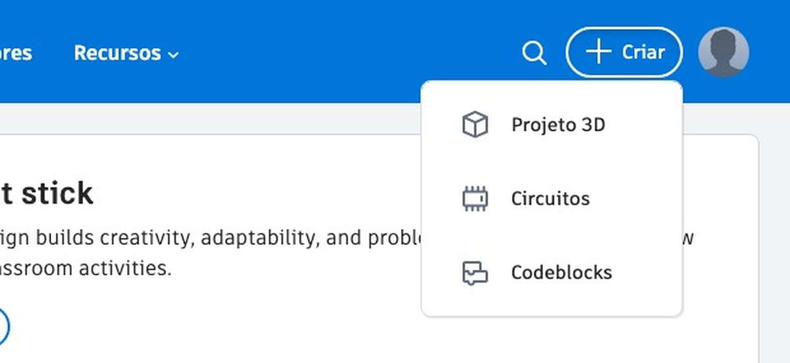
O clipe repete sozinho. Repare onde o cursor vai antes de clicar.
Foto da tela.
No canto de cima à direita, ao lado da bolinha da sua conta, clique no botão branco + Criar.
Abre um menuzinho com três linhas.
- Não acho o botão Criar
- Ele fica na faixa azul do alto da página, bem à direita, logo antes da bolinha da sua conta.
- Cliquei e não abriu nada
- Clique uma vez só, em cima da palavra Criar. Dois cliques rápidos abrem e fecham o menu na mesma hora.
- Abriu outra coisa
- Você clicou na bolinha da conta, que fica ao lado. Feche apertando Esc e clique um pouco mais para a esquerda.
Escolha Projeto 3D
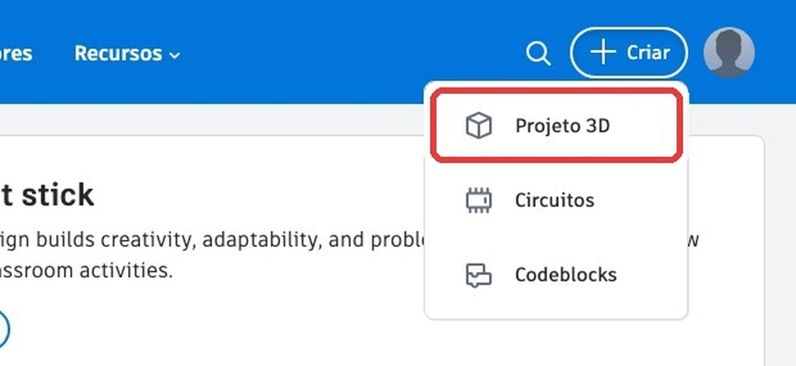
Foto da tela.
No menuzinho que abriu, clique na primeira linha: Projeto 3D — a do desenho de cubo, marcada de vermelho na figura.
O Tinkercad abre o editor e dá ao projeto um nome sorteado, meio esquisito. Deixe assim: no último passo você troca.
- Cliquei em Circuitos sem querer
- Volte com a seta ⟵ do navegador e clique de novo em + Criar, escolhendo a primeira linha.
- A tela ficou branca e não carrega
- O Tinkercad é pesado. Espere até meio minuto. Se continuar branca, recarregue com F5.
- Abriu um projeto que eu já tinha
- Você clicou numa capa da lista em vez do botão. Volte e use o + Criar do canto de cima.
PLANEJE antes de montar
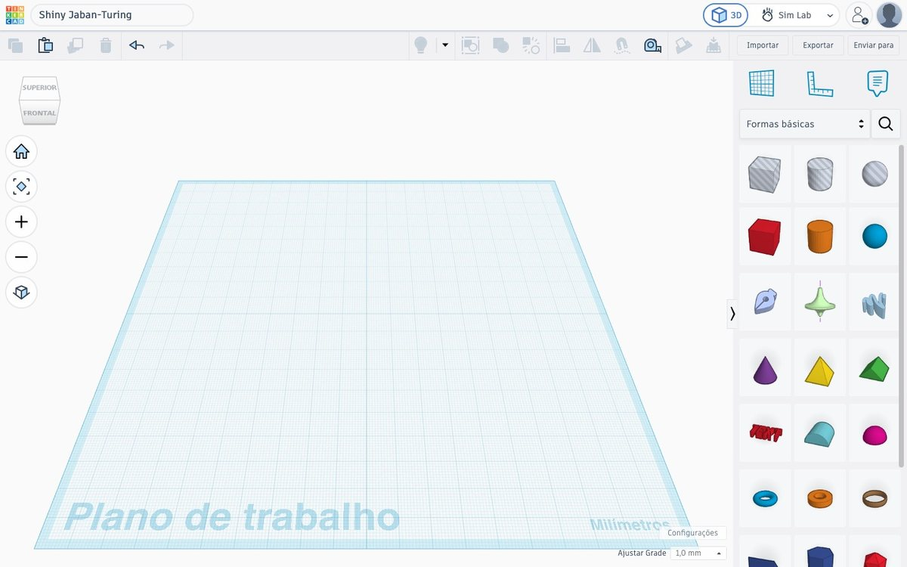
Foto da tela.
Antes de arrastar qualquer forma, desenhe no papel o que você vai fazer, visto de frente, com as formas do Tinkercad: caixa, cilindro, esfera, cone, telhado.
O exemplo de hoje é um totem: uma base larga, uma coluna e um chapéu de cone. Três peças, três cores.
Escreva do lado de cada peça: a forma, os três números (comprimento, largura, altura) e a cor. O plano azul vazio é o que você tem agora.
- Não sei o que fazer
- Olhe ao redor: uma garrafa é um cilindro, uma casa tem caixa e telhado, um sorvete é cone e esfera. Escolha algo simples, de 3 ou 4 peças.
- O desenho ficou grande demais
- Tudo bem: reduza. Um projeto de 3 peças bem-feitas vale mais que um de 20 pela metade.
Arraste uma Caixa: a base
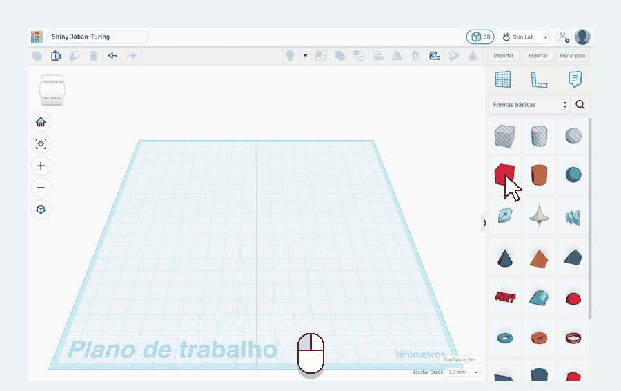
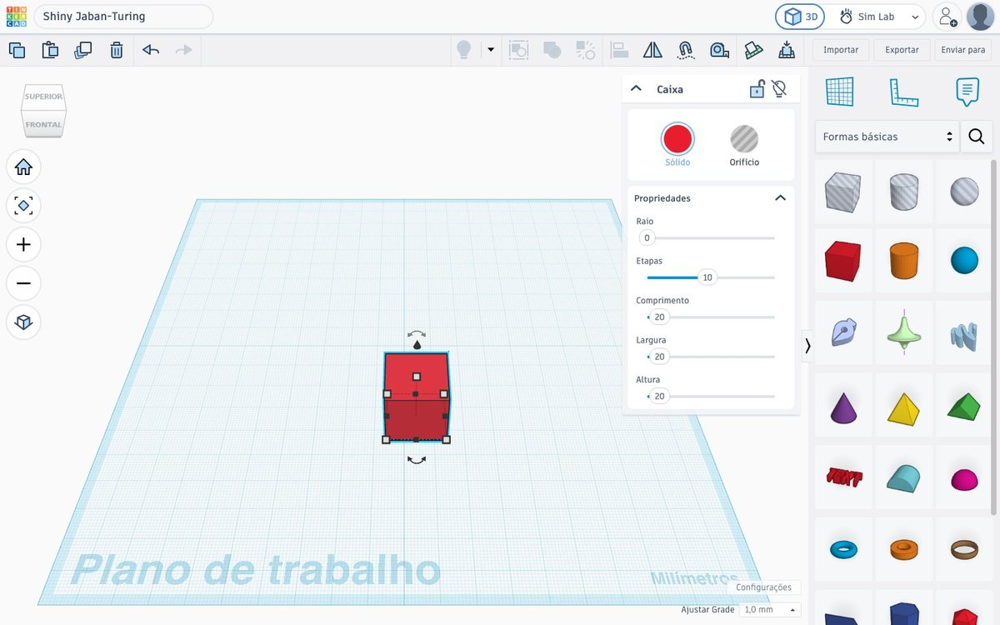
O clipe repete sozinho. Repare onde o cursor vai antes de clicar.
Foto da tela.
Na coluna da direita, a forma vermelha do meio da segunda fileira, à esquerda, é a Caixa. Segure o botão esquerdo nela, arraste até o meio do plano e solte.
- Peguei a caixa cinza listrada
- Essa é o buraco. Aperte Delete e arraste a vermelha.
Base: Comprimento 40, Largura 40, Altura 10
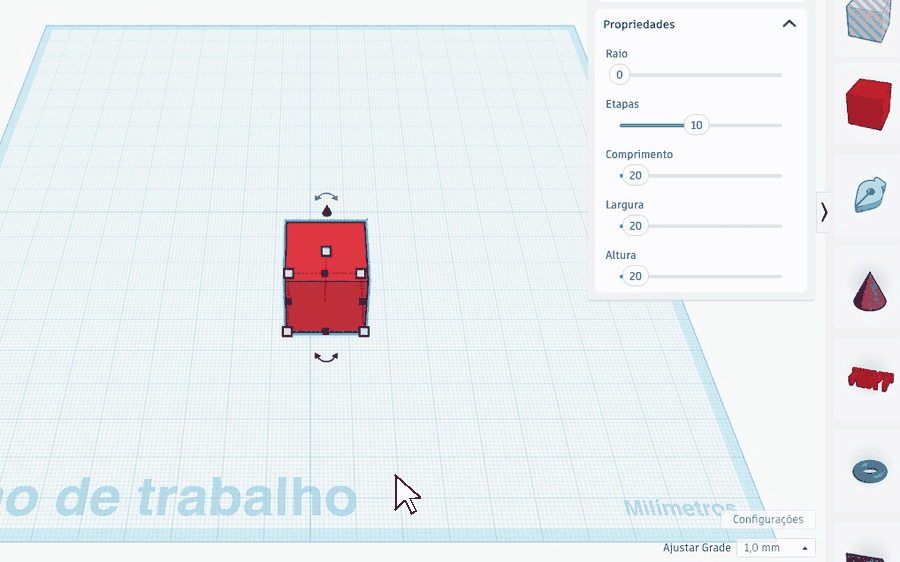
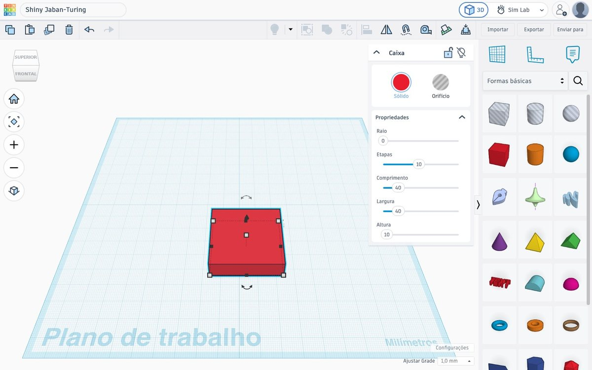
O clipe repete sozinho. Repare onde o cursor vai antes de clicar.
Foto da tela.
No painel, escreva 40 em Comprimento, 40 em Largura e 10 em Altura (Enter depois de cada). Uma placa quadrada e baixa.
- Digitei e nada mudou
- Falta o Enter depois de cada número.
Pinte a base de verde
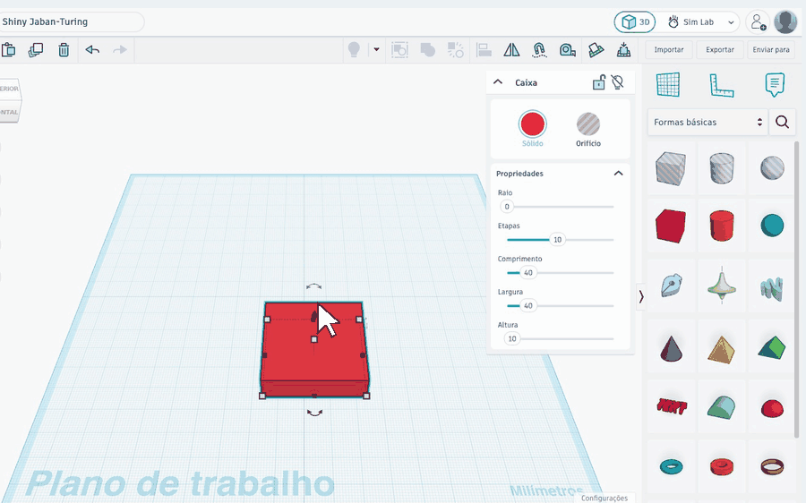
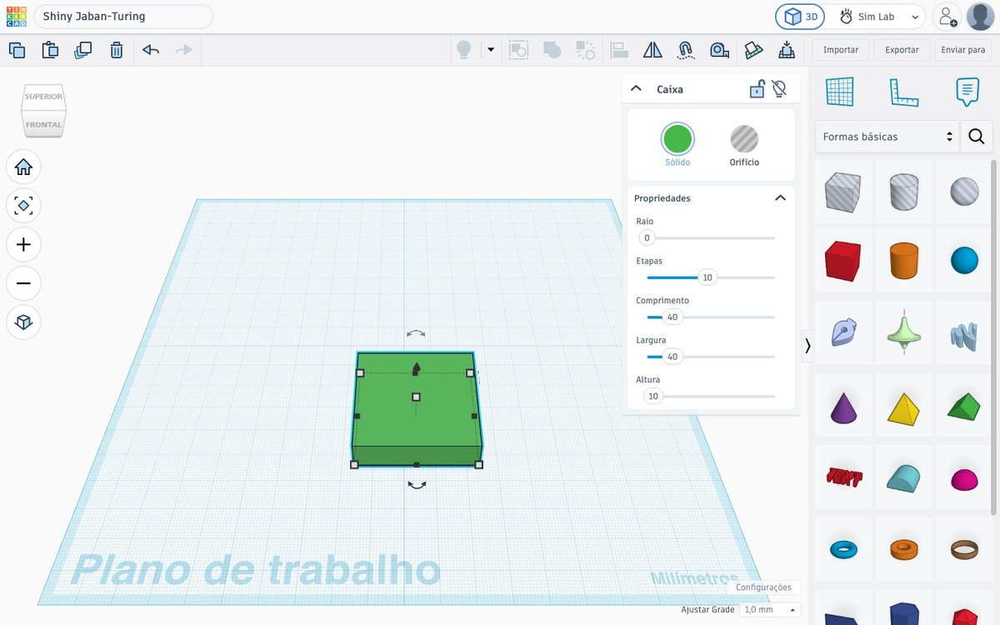
O clipe repete sozinho. Repare onde o cursor vai antes de clicar.
Foto da tela.
No painel, clique na bolinha vermelha ao lado de Sólido: abre a janela Cores sólidas. Na fileira do meio, clique na bolinha verde (a quarta). Depois, clique de novo na bolinha de cor para fechar a janela.
- Ficou verde-claro
- Você pegou a bolinha da fileira de cima. A normal é a do meio.
- A janela não fecha
- Clique na bolinha de cor do painel de novo. O Esc não fecha essa janela.
Arraste um Cilindro para a tampa da base
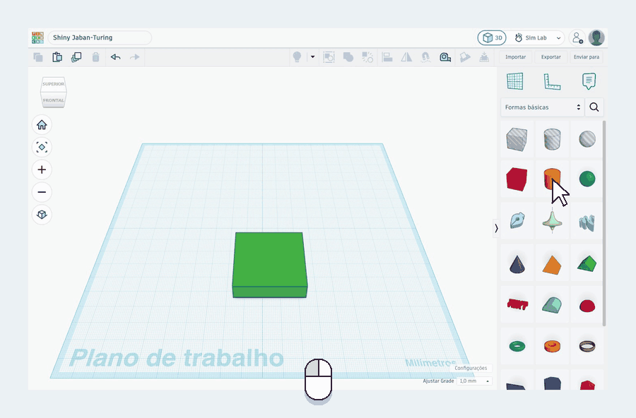
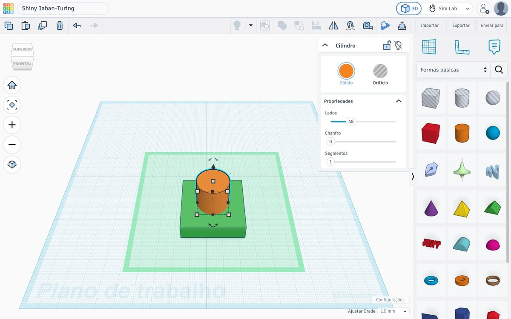
O clipe repete sozinho. Repare onde o cursor vai antes de clicar.
Foto da tela.
Clique num lugar vazio. A forma laranja do meio da segunda fileira é o Cilindro: arraste e solte no meio da tampa da base.
Ele nasce em cima da base, e centrado: o quadrado verde aparece em volta.
- O cilindro caiu no chão
- Você soltou fora da base. Arraste de novo, soltando em cima da tampa.
- Peguei o cilindro cinza listrado
- Esse é o buraco. Aperte Delete e arraste o laranja.
Coluna: só a altura, 40
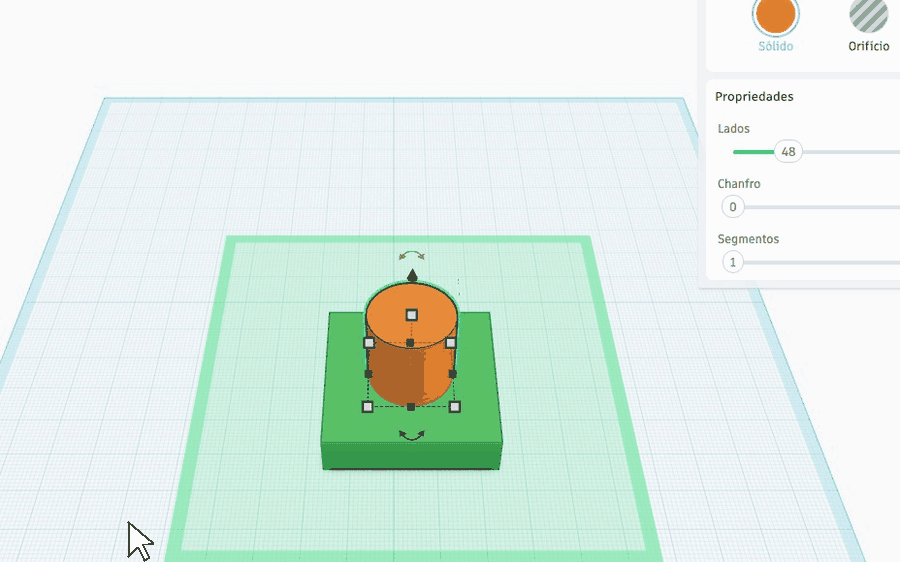
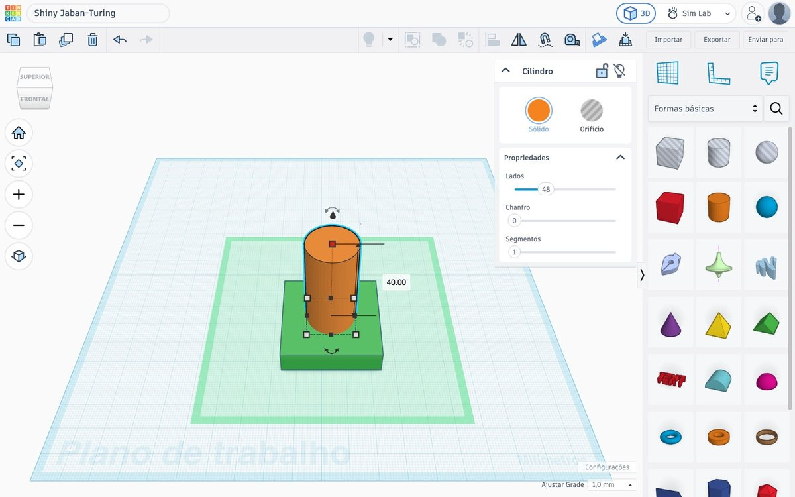
O clipe repete sozinho. Repare onde o cursor vai antes de clicar.
Foto da tela.
Clique na alça do canto de cima à esquerda da base do cilindro e confira os dois números: 20 e 20 (se for outro, escreva 20). Depois clique na alça do meio da tampa e escreva 40 na altura (Enter).
A base fica em 20 (o tamanho com que o cilindro nasce): assim a coluna continua centrada na base. Mudar a base é que a tira do centro.
- Os números sumiram
- Clique no cilindro e na alça do meio da tampa de novo.
- A coluna saiu torta
- Você mexeu na base do cilindro. Aperte Ctrl + Z e mude só a altura.
Pinte a coluna de amarelo
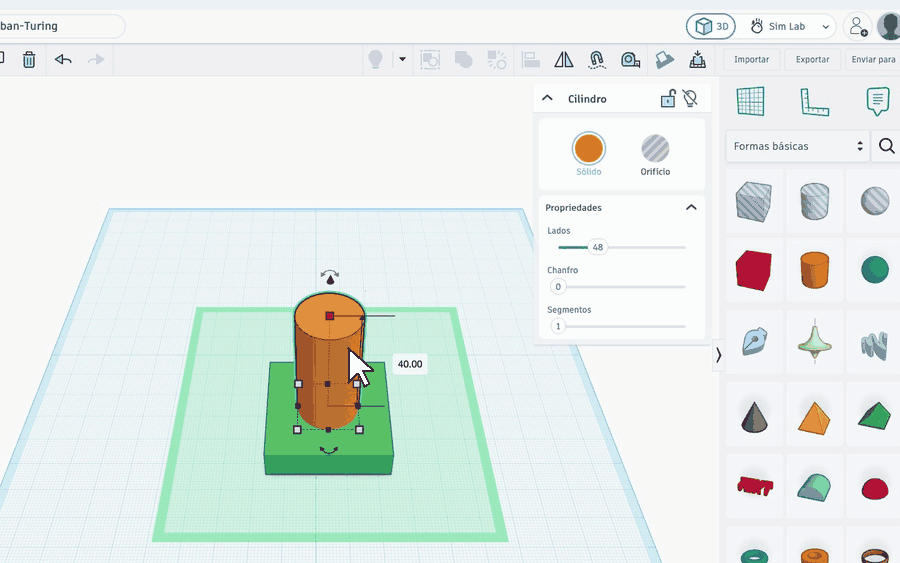
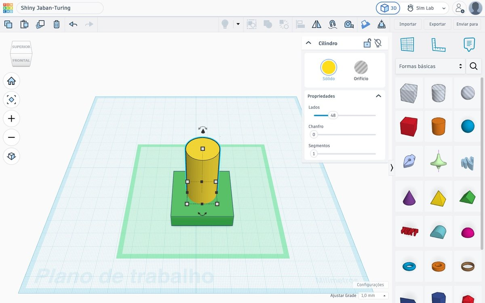
O clipe repete sozinho. Repare onde o cursor vai antes de clicar.
Foto da tela.
Com a coluna selecionada, clique na bolinha de cor do painel. Na fileira do meio, clique na bolinha amarela (a terceira). Clique de novo na bolinha de cor para fechar a janela.
- Ficou laranja
- A amarela é a terceira da fileira do meio; a laranja é a segunda.
Arraste um Cone para a tampa da coluna
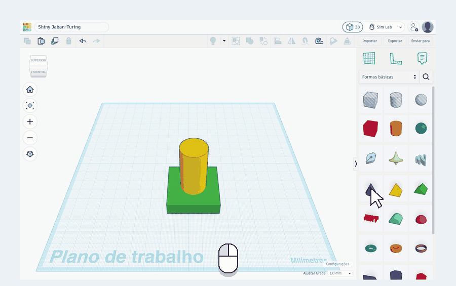
O clipe repete sozinho. Repare onde o cursor vai antes de clicar.
Foto da tela.
Clique num lugar vazio. Na fileira da pirâmide, o cone roxo com o nome Cone: solte-o no meio da tampa da coluna.
- O cone caiu no chão
- Você soltou fora da coluna. Arraste de novo para a tampa.
Chapéu: só a altura, 24
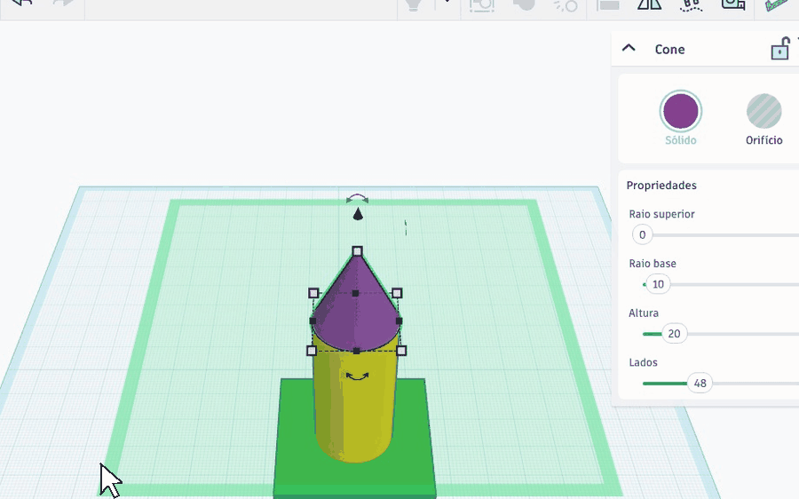
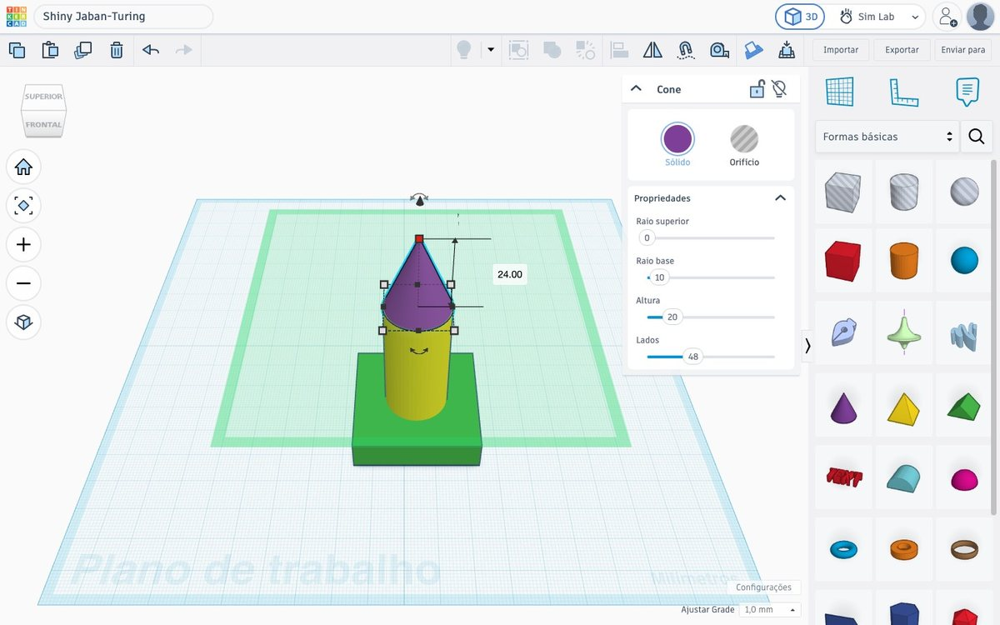
O clipe repete sozinho. Repare onde o cursor vai antes de clicar.
Foto da tela.
Clique na alça do canto da base do cone e confira os dois números: 20 e 20 (se for outro, escreva 20). Depois clique na alça do meio da ponta e escreva 24 na altura (Enter).
A base do cone fica em 20, igual à da coluna.
- Os números sumiram
- Clique no cone e na alça do meio da ponta de novo.
Pinte o chapéu de vermelho
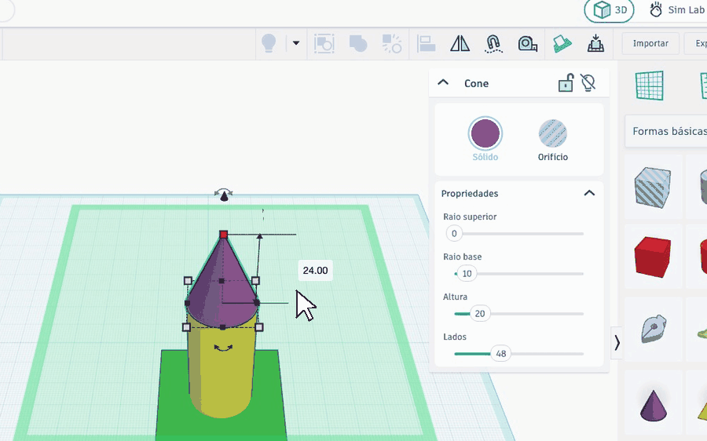
O clipe repete sozinho. Repare onde o cursor vai antes de clicar.
Foto da tela.
Com o cone selecionado, clique na bolinha de cor do painel. Na fileira do meio, clique na bolinha vermelha (a primeira à esquerda). Clique de novo na bolinha de cor para fechar a janela.
- Ficou rosa
- A vermelha é a primeira bolinha da fileira do meio.
Selecione tudo: três peças
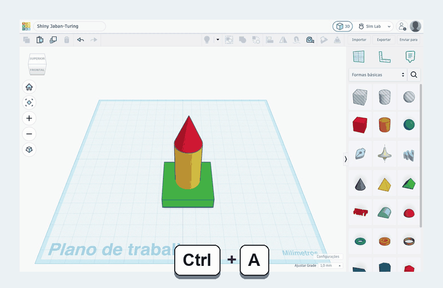
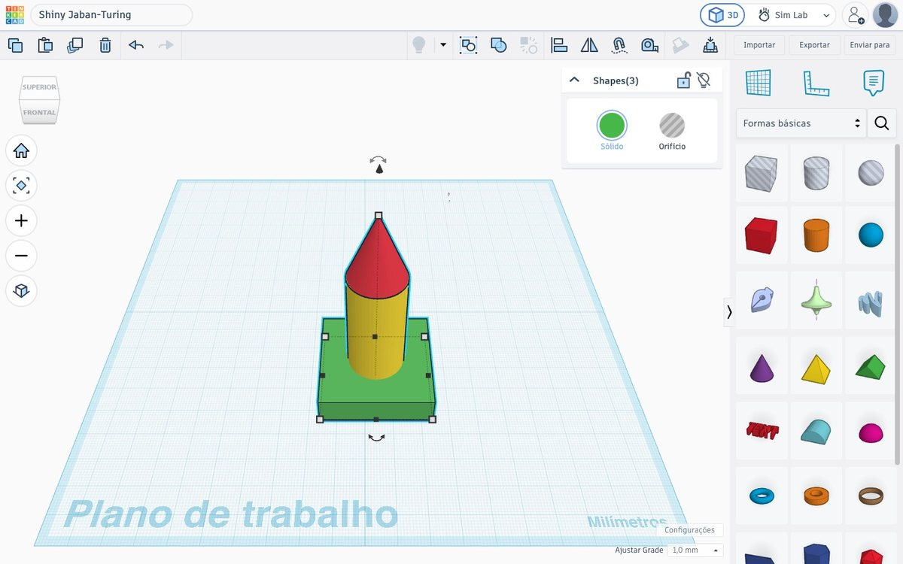
O clipe repete sozinho. Repare onde o cursor vai antes de clicar.
Foto da tela.
Clique num lugar vazio do plano e aperte Ctrl + A (Mac: Cmd + A). O painel diz Shapes(3): base, coluna e chapéu.
Não agrupe! O Grupo de união apagaria as cores (Aula 7). Clique num lugar vazio para soltar a seleção.
- O painel diz outro número
- Conte as peças do seu projeto. O totem tem três.
Gire a câmera: veja por trás
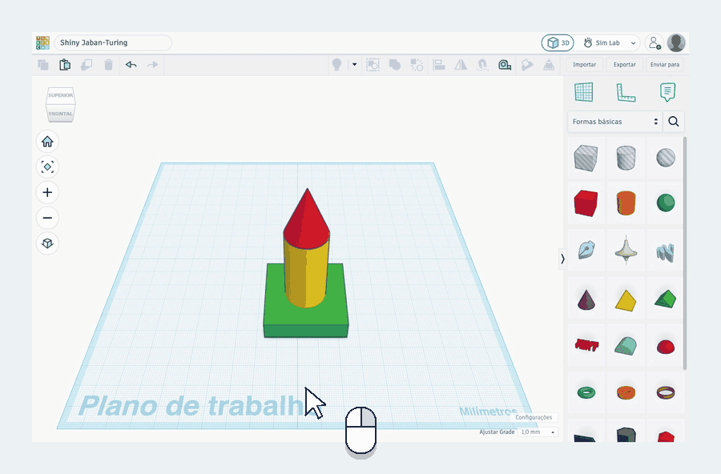
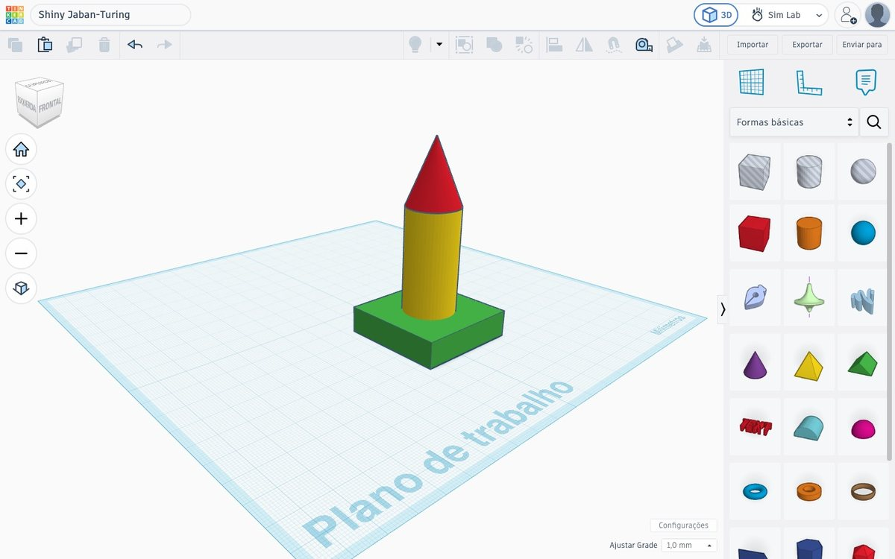
O clipe repete sozinho. Repare onde o cursor vai antes de clicar.
Foto da tela.
Segure o botão direito do mouse em cima do plano de trabalho e arraste um pouco para a direita e para cima.
A câmera gira: confira o seu projeto de todos os lados. É assim que se acha o que ficou torto antes de mostrar.
- A peça saiu do lugar
- Você usou o botão esquerdo. Aperte Ctrl + Z e repita com o direito.
Olhe de frente: o desenho do papel
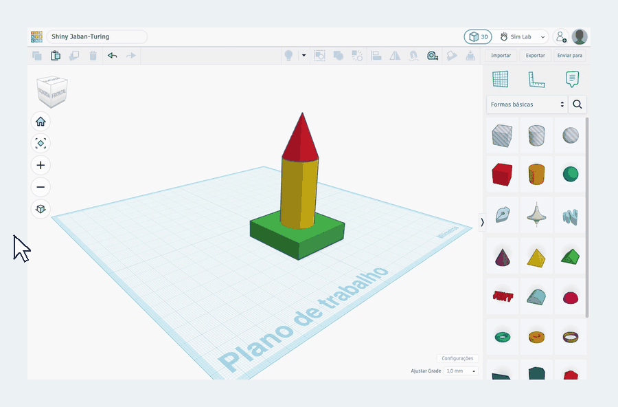
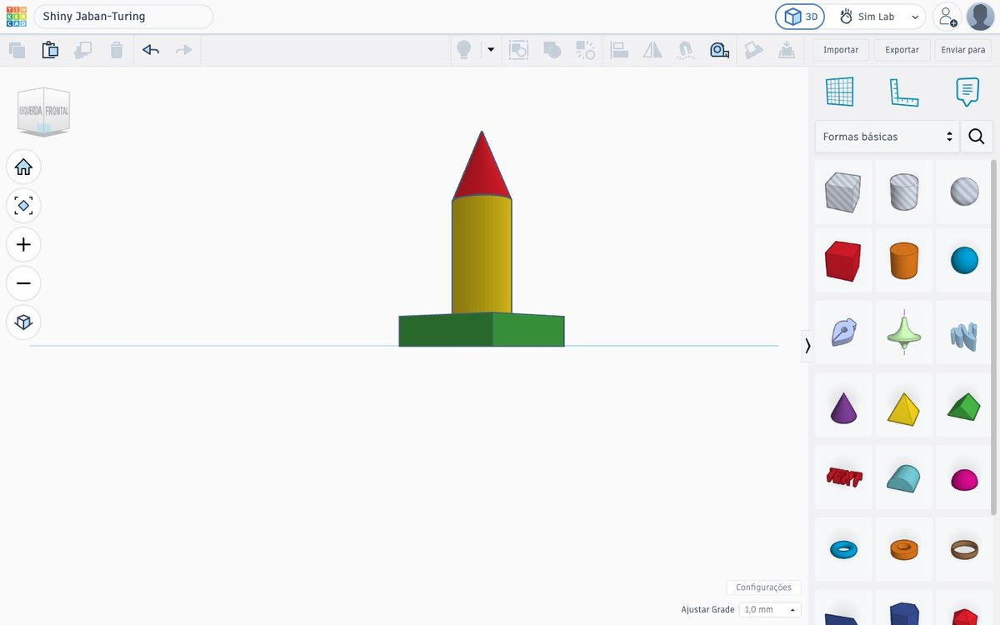
O clipe repete sozinho. Repare onde o cursor vai antes de clicar.
Foto da tela.
No cubo de vistas, no canto de cima à esquerda, clique na face escrita FRONTAL.
De frente é o mesmo desenho que você fez no papel: compare. Se um tamanho não bateu, volte à peça e corrija o número.
- A câmera não mudou
- Clique na palavra FRONTAL do cubinho.
Dê um nome ao seu projeto
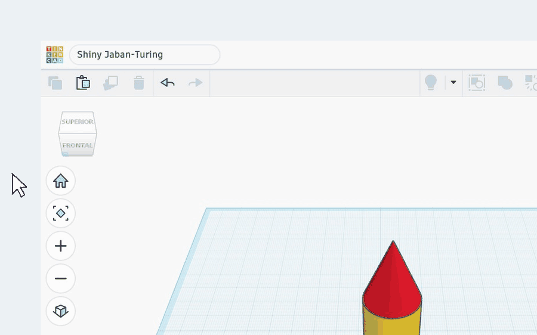
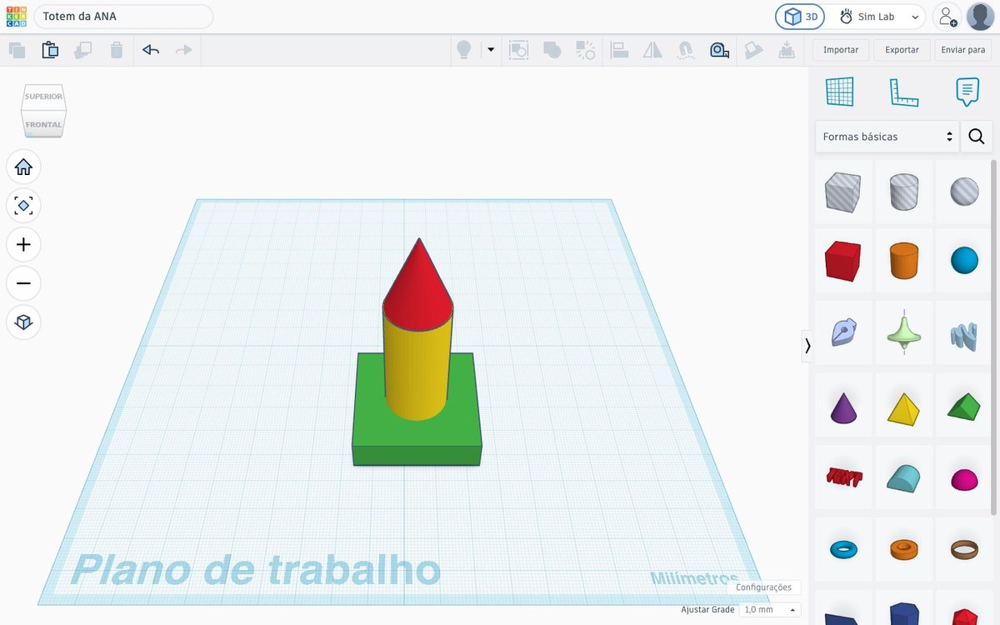
O clipe repete sozinho. Repare onde o cursor vai antes de clicar.
Foto da tela.
Clique na casinha da barra da esquerda para voltar à vista inicial. Depois clique no nome do projeto, no canto de cima à esquerda, apague, escreva Totem da ANA (ou o nome do seu projeto) e aperte Enter.
O Tinkercad salva sozinho: o totem fica na sua conta.
- O nome não mudou
- Falta o Enter.
- O campo não abriu
- Clique em cima das letras do nome.
MOSTRE: o botão Enviar para
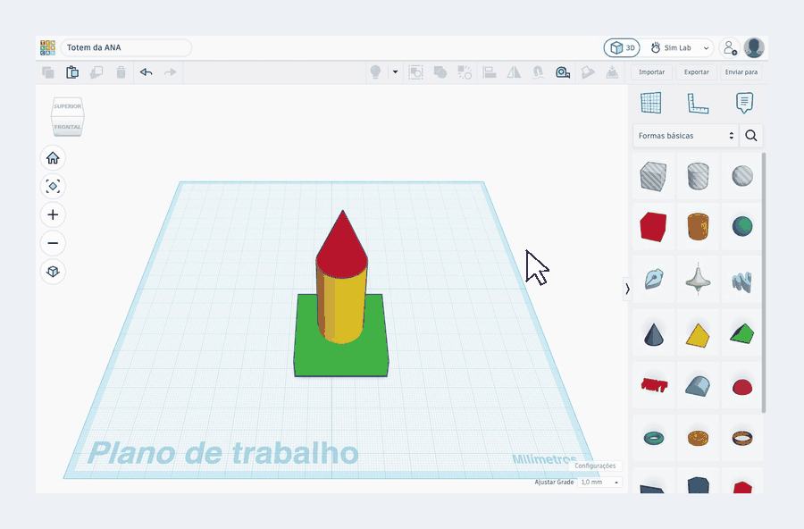
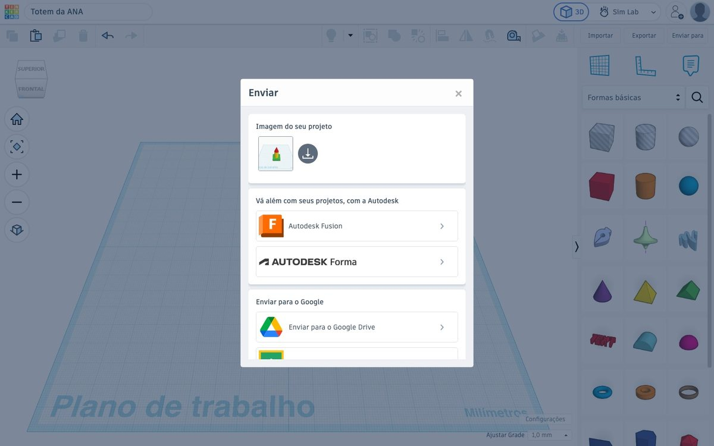
O clipe repete sozinho. Repare onde o cursor vai antes de clicar.
Foto da tela.
No canto de cima à direita, clique em Enviar para. Abre uma janela com a imagem do seu projeto (uma foto dele) e, embaixo, opções de enviar para outros programas e para o Google Drive.
A imagem é o jeito mais fácil de mostrar o projeto: o botãozinho de baixar ao lado dela guarda a foto no computador. Hoje, só olhe: não envie nada para lugar nenhum sem o professor.
- Não achei o botão
- Fica no canto de cima à direita, o último dos três, depois de Importar e Exportar.
- A foto está vazia
- Espere um segundo: ela carrega.
MOSTRE: o botão Exportar
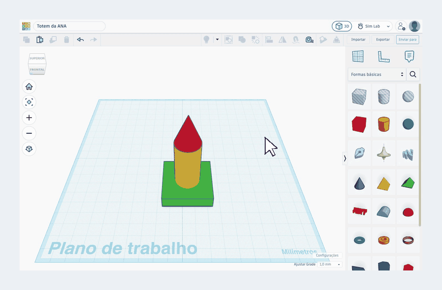
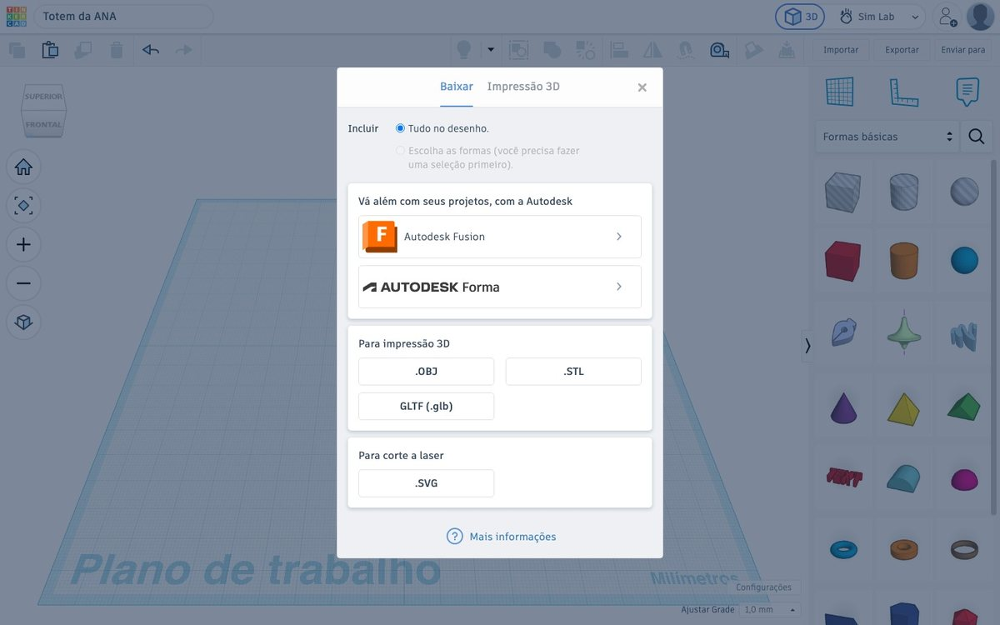
O clipe repete sozinho. Repare onde o cursor vai antes de clicar.
Foto da tela.
Feche a janela com o × (ou aperte Esc). Clique em Exportar. Abre uma janela com os arquivos do projeto: .OBJ, .STL e GLTF, para impressão 3D, e .SVG, para corte a laser.
O .STL é o arquivo que uma impressora 3D lê: ele é a peça pronta para sair do computador. Hoje, só olhe: não baixe. Feche a janela com o ×.
- Abriu a janela errada
- Feche com o × e clique no botão do meio, Exportar.
- Cliquei no .STL e baixou um arquivo
- Sem problema: ele fica na pasta de downloads do computador. Apague o arquivo se o professor pedir.